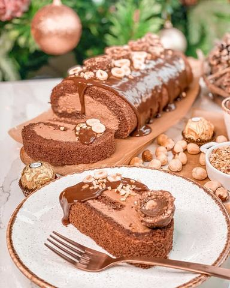

Moja beleška
SačuvanoSastojci
- Za koru je potrebno
- Fil
- Preliv
Priprema
+50 ml čokoladnog mleka Za koru je potrebno da se belanca umute u čvrst šne postepeno dodavajući šećere. Potom lagano dodajete toplu vodu muteći najnizom jačinom, pa žumanca. Suve sastojke lepo promešate zajedno pa ih u smesu postepeno dodajete lagano mešajući špatulom. Na veliki pleh od rerne postavite papir za pečenje, pa ga premažite sa malo ulja i ulijte smesu. Nekoliko puta lupite plehom o radnu površinu pre ubacivanja u rernu kako bi se oslobodio višak vazduha i pecite tačno 10 minuta u zagrejanoj rerni na 180C. Pečenu i još toplu koru umotajte u rolat i ostavite da se tako ohladi. Potom lagano koru odlepite od papira i poprskajte čokoladnim mlekom, pa filujte: Krem umutite sa marscapone sirom, u to sipajte slatku pavlaku i nastavite mućenje dok smesa ne očvrsne dovoljno, a pred sam kraj sipajte i kremfix i povežite sve zajedno. Premažite fil preko kore i lagano umotajte u rolat, koji možete obloziti providnom folijom i ostaviti ga preko noći u frižideru. Ujutru samo otopite čokoladu u slatkoj pavlaci i prelijte preko. Mislim da ćete se oduševiti mekoćom i punoćom ukusa 🥰
Originalni opis sa Instagrama
Ferrero rocher rolat 🌰💫 Danas je trpeza posna, razume se, ali danas mi mame imamo i specijalan zadatak, da pripremimo i po neko mrsno jelo za sutra, da nam se za Božić zašareni trpeza, a da ne liznemo nijedan fil nekom greškom 😅 Pa ako nekome još fali ideja čime sutra da se zasladite da vam predstavim ovaj savršeno kremast, sočan, mekan i preeeukusan rolat. Za koru je potrebno: •6 jaja (odvajaju se zumanca i belanca) •120 gr kristal šećera •1 vanilin šećer •50 ml tople vode •40 gr mekog belog brašna •60 gr mlevenog lešnika •20 gr kakaa •1 kašičica praška za pecivo +50 ml čokoladnog mleka Fil: •250 gr mascarpone sira •300 gr nutella krema sa komadićima lešnika •200 ml slatke pavlake •1 kremfix Preliv: •100 gr mlečne Callebaut čokolade @curcuma_vracar •50 ml slatka pavlake Za koru je potrebno da se belanca umute u čvrst šne postepeno dodavajući šećere. Potom lagano dodajete toplu vodu muteći najnizom jačinom, pa žumanca. Suve sastojke lepo promešate zajedno pa ih u smesu postepeno dodajete lagano mešajući špatulom. Na veliki pleh od rerne postavite papir za pečenje, pa ga premažite sa malo ulja i ulijte smesu. Nekoliko puta lupite plehom o radnu površinu pre ubacivanja u rernu kako bi se oslobodio višak vazduha i pecite tačno 10 minuta u zagrejanoj rerni na 180C. Pečenu i još toplu koru umotajte u rolat i ostavite da se tako ohladi. Potom lagano koru odlepite od papira i poprskajte čokoladnim mlekom, pa filujte: Krem umutite sa marscapone sirom, u to sipajte slatku pavlaku i nastavite mućenje dok smesa ne očvrsne dovoljno, a pred sam kraj sipajte i kremfix i povežite sve zajedno. Premažite fil preko kore i lagano umotajte u rolat, koji možete obloziti providnom folijom i ostaviti ga preko noći u frižideru. Ujutru samo otopite čokoladu u slatkoj pavlaci i prelijte preko. Mislim da ćete se oduševiti mekoćom i punoćom ukusa 🥰 Prijatno ❣️ • • • #cokoladnirolat #rolat #swissrollcake #ferrerorocherolat #idejezadezert #dezert #slatkisi #domacikolaci #zadovoljnahr #uspjesnazena #dessertonmytable #christmasdesserts #buiskuitrolle